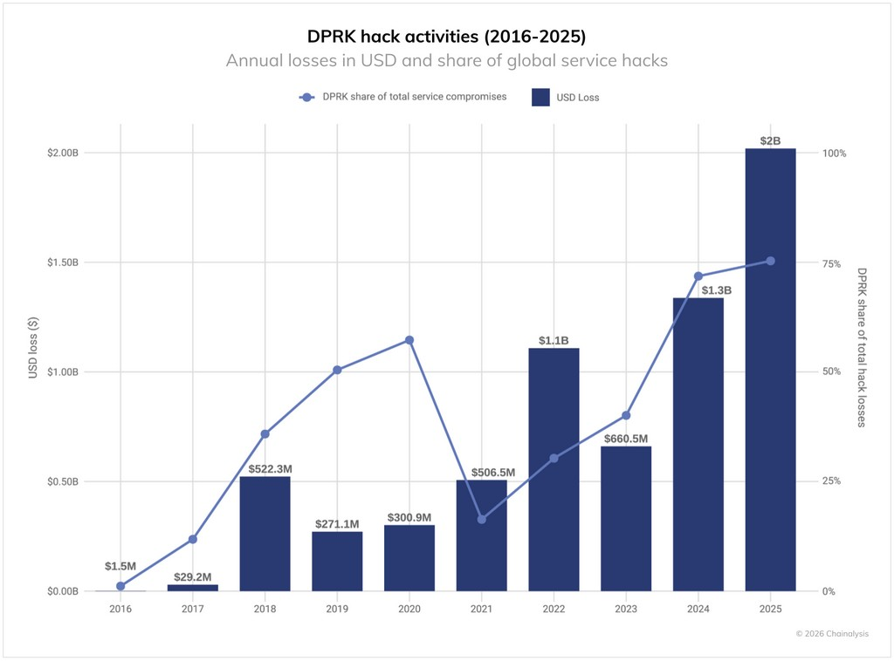

2025년 암호화폐 도난 규모 34억 달러, 북한 사상 최대 20억 달러 절도
북한 해커들은 2025년에 20억 2천만 달러 상당의 암호화폐를 훔쳤는데, 이는 전년 대비 51% 증가한 수치이며, 공격 횟수는 줄었음에도 불구하고 누적 피해액은 67억 5천만 달러에 달합니다.
2025년에도 암호화폐 생태계는 또 다른 어려운 한 해를 맞이했으며, 도난 자금은 계속해서 증가세를 보였습니다. 암호화폐 업계에서는 2025년 1월부터 12월 초까지 34억 달러 이상의 도난 사건이 발생했으며, 그 중 2월에 발생한 바이비트(Bybit) 해킹 사건만으로 15억 달러가량 손실되었습니다.
2025년 암호화폐 도난의 4대 특징
Chainalysis의 분석에 따르면 암호화폐 도난 패턴에 네 가지 주요 변화가 나타났습니다.
- 북한의 지속적 위협: 주요 위협 행위자로서 북한(조선민주주의공화국)의 지속적인 존재
- 중앙 집중식 서비스 공격: 개인 키 인프라 및 서명 프로세스에 대한 정교한 공격으로 전체 손실액의 88%를 차지
- 개인 지갑 해킹 급증: 2025년 15만 8천 건으로 급증, 8만 명의 피해자 발생(2022년 대비 약 3배 증가)
- DeFi 해킹 추세 변화: TVL 회복에도 불구하고 해킹 손실은 억제된 상태 유지
북한: 사상 최대 규모의 암호화폐 탈취
북한은 암호화폐 보안에 대한 가장 심각한 국가 차원의 위협으로 남아 있습니다. 2025년 북한 해커들은 최소 20억 2천만 달러(2024년 대비 6억 8천1백만 달러 증가) 상당의 암호화폐를 탈취했으며, 이는 전년 대비 51% 증가한 수치입니다. 전체 서비스 침해 사례 중 북한의 공격이 76%를 차지하는 기록적인 수치이며, 누적 추정치는 최소 67억 5천만 달러에 달합니다.
북한의 위협 행위자들은 IT 직원을 암호화폐 서비스 내부에 침투시켜 특권 접근 권한을 확보하고 대규모 침해를 가능하게 하는 주요 공격 방식을 점점 더 많이 사용하고 있습니다. 최근에는 유명 웹3 및 AI 기업의 채용 담당자를 사칭하여 가짜 채용 절차를 진행하고, 전략적 투자자 또는 인수자를 사칭하여 민감한 시스템 정보에 접근하는 진화된 수법도 사용하고 있습니다.
북한의 독특한 자금세탁 방식
북한의 자금세탁은 다른 사이버 범죄자들과는 확연히 다른 패턴을 보입니다. 전체 거래량의 60% 이상이 50만 달러 미만의 소액 이체에 집중되어 있으며, 주요 절도 사건 발생 후 약 45일에 걸쳐 구조화된 다단계 자금세탁 경로를 거칩니다.
- 중국어 기반 자금 이동 서비스: +355%~+1000% 이상 선호도, 규제 준수 체계가 취약한 네트워크 활용
- 브리지 서비스: +97% 차이, 크로스체인 브리지를 통한 추적 회피
- 혼합 서비스: +100% 차이, 자금 흐름 은폐 목적
- Huione 등 전문 서비스: +356%, 자금 세탁 작업 촉진
자금세탁의 3단계 타임라인
북한 소행으로 추정되는 해킹 사건 이후 온체인 활동 분석 결과, 일관된 3단계 패턴이 나타났습니다.
- 1단계 - 즉시 레이어링(0~5일): DeFi 프로토콜로 자금 유입 급증(+370%), 혼합 서비스 이용량 증가(+135~150%), 최초 절도 사건으로부터 거리를 두기 위한 긴급한 "선제적 조치"
- 2단계 - 초기 통합(6~10일): KYC 간소화 거래소(+37%), 중앙 집중식 거래소(+32%) 유입 시작, 2차 혼합 서비스(+76%), XMRt 등 크로스체인 브리지(+141%) 활용
- 3단계 - 장기 통합(20~45일): No-KYC 거래소(+82%), 투도우 단바오 등 보증 서비스(+87%), 즉시 환전(+61%), Huione 등 중국어 플랫폼(+45%), 중앙 집중식 거래소(+50%)를 통한 최종 법정통화 전환
개인 지갑 해킹의 급증
개인 지갑 해킹은 2025년에 15만 8천 건으로 급증하여 2022년의 5만 4천 건 대비 약 3배 증가했습니다. 고유 피해자 수도 2022년 4만 명에서 2025년 최소 8만 명으로 증가했습니다. 그러나 도난당한 총액(7억 1천 3백만 달러)은 2024년 최고치인 15억 달러에서 감소했는데, 이는 공격자들이 더 많은 사용자를 타겟으로 하되 피해자당 더 적은 금액을 탈취하고 있음을 시사합니다.
네트워크별 피해 데이터를 보면, 2025년 10만 개 지갑당 범죄율 측정 시 이더리움과 트론이 가장 높은 절도율을 보였습니다. 반면, 베이스와 솔라나는 상당한 사용자 기반에도 불구하고 낮은 절도율을 보였습니다. 이는 기술적 요인 외에도 사용자 인구 통계, 인기 애플리케이션, 범죄 조직 인프라와 같은 요소들이 도난 발생률을 결정하는 데 중요한 역할을 한다는 것을 시사합니다.
DeFi 보안: 긍정적 신호와 Venus Protocol 사례
DeFi 섹터는 2025년에 독특한 패턴을 보여주고 있습니다. 2020-2021년에는 TVL과 해킹 손실이 동시에 증가했고, 2022-2023년에는 두 지표 모두 함께 하락했습니다. 그러나 2024-2025년에는 TVL이 2023년 최저치에서 상당히 회복되었음에도 불구하고, 해킹 손실은 억제된 상태를 유지하고 있습니다. 이는 DeFi 프로토콜이 2020-2021년 대비 더 효과적인 보안 조치를 구현하고 있음을 시사합니다.
Venus Protocol 사례는 이러한 개선을 잘 보여줍니다. 2025년 9월 공격 시 Hexagate 보안 모니터링 플랫폼이 공격 18시간 전 의심스러운 활동을 탐지했고, 악성 거래 발생 즉시 경보를 발령했습니다. 20분 내 프로토콜을 일시 중지하고, 5시간 내 부분 기능 복구, 7시간 내 공격자 지갑 강제 청산, 12시간 내 도난 자금 전액을 회수하는 성과를 거뒀습니다. 더 나아가 공격자가 보유한 3백만 달러 상당의 자산을 동결하는 거버넌스 제안을 통과시켜, 공격자는 이익을 얻지 못했을 뿐 아니라 오히려 손실을 입었습니다.
결론: 2026년을 위한 시사점
2025년 데이터는 북한이 암호화폐 위협 행위자로서 진화하고 있음을 보여줍니다. 더 적은 공격으로 훨씬 더 큰 피해를 입히는 능력은 증가하는 정교함과 인내심을 보여줍니다. 북한이 특정 서비스 유형과 이체 금액에 대한 일관된 선호도는 탐지 기회를 제공하며, 이는 수사관들이 온체인 행동 패턴을 식별하는 데 도움이 됩니다.
북한은 일반적인 사이버 범죄자와는 다른 규칙으로 운영됩니다. 기록적인 2025년 실적이 74% 적은 알려진 공격으로 달성되었다는 점은 우리가 그들 활동의 가장 눈에 띄는 부분만 보고 있을 수 있음을 시사합니다. 2026년의 과제는 또 다른 바이비트급 사건이 발생하기 전에 이러한 고영향 작전을 탐지하고 예방하는 것입니다.